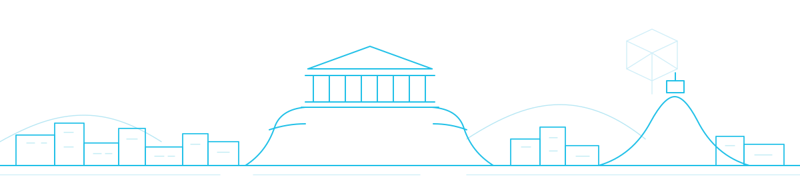

Venue & travel
3DOR 2027 takes place in Athens, Greece. The exact venue will be published here.
Venue
To be announced
The conference location, room details and a map will be added as soon as the venue is confirmed.
Getting to Athens
Athens International Airport “Eleftherios Venizelos” (ATH) is the main gateway, connected to the city centre by metro line 3, suburban rail and express buses. Within the city, three metro lines plus trams and buses cover most districts.
Early September in Athens is typically warm and dry, with daytime temperatures often around 30 °C.
Accommodation
To be announced
Suggested hotels near the venue, and any negotiated rates, will be listed once the venue is fixed.
Registration
To be announced
